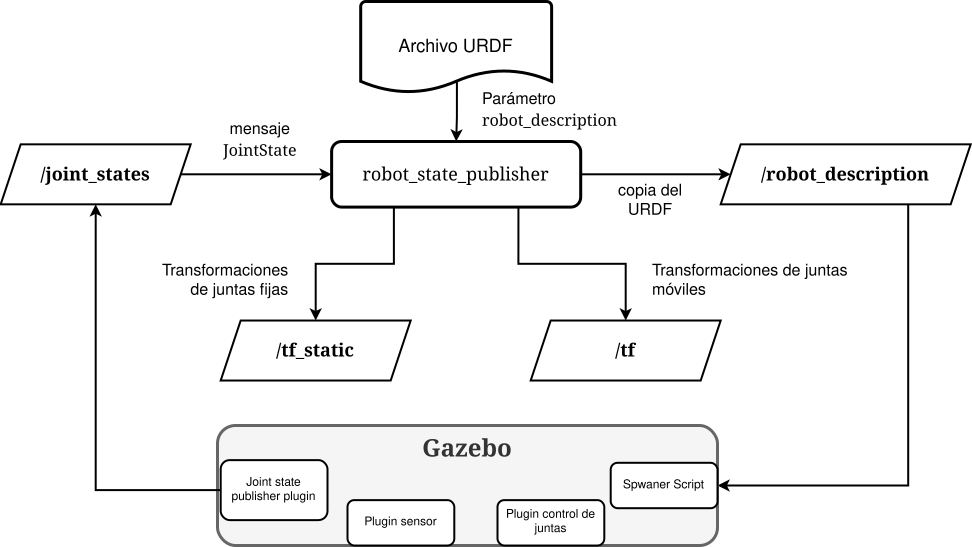

Robótica
Clase 09
Semana 10 - 19/05/2025
Gazebo
- Importancia de los entornos de simulación
- Gratuito y open-source
- Mantenido por Open Robotics (ROS)

gazebosim.org
Gazebo + ROS
Entorno virtual que reemplaza al real
Robot simulado que reemplaza al real
- Lectura de sensores simulados
- Comandar actuadores virtuales
- Obtener feedback de los comandos
Sistema con joint_state_publisher_gui

Sistema con Gazebo
Ejcutar Gazebo con ROS2
Desde la linea de comando
Desde archivo launch
SDF: Simulation Description Format
- Gazebo utiliza archivos SDF (\(\neq\) URDF)
- Permite describir un mundo (además de modelos)
Se puede convertir URDF a SDF, pero se necesitan ajustes
Gazebo y URDF
- Para agregar elementos de Gazebo:
<gazebo> .. </gazebo>
- Para hacer referencia a elementos del URDF:
<gazebo name="[nombre_link|joint|etc]">
Gazebo y URDF
Requisitos:
- Nombramiento
- Propiedades inerciales
- Materiales y colores
Gazebo y URDF: <collision>
Deben definirse los elementos de colisión para cada link
Gazebo y URDF: <inertial>
Deben definirse las propiedades físicas para cada link
inertial_macros.xacro
Se facilita un archivo XACRO para el cálculo de las inercias según la geometría
- Prisma
<xacro:inertial_box mass="[masa_kg]" x="[largo]" y="[ancho]" z="[alto]">
<origin xyz="[traslacion]" rpy="[rotacion]"/>
</xacro:inertial_box>- Cilindro
<xacro:inertial_cylinder mass="[masa_kg]" radius="[radio]" length="[ancho]">
<origin xyz="[traslacion]" rpy="[rotacion]"/>
</xacro:inertial_cylinder>- Para cuando sea necesario una inercia despreciable
Importar URDF en Gazebo
Dada la descripción del robot disponible en el topic
/robot_description(y Gazebo ejecutandose)
- Desde la linea de comando:
- Desde archivo launch
ros2_control
Conjunto de paquetes para desarrollar controladores genéricos para todo tipo de robots

ros2_control + Gazebo = gz_ros2_control
Actualizar el URDF
- Definir un hardware simulado con
<ros2_control>
<ros2_control name="GazeboSystem" type="system">
<hardware>
<plugin>gz_ros2_control/GazeboSimSystem</plugin>
</hardware>
...
</ros2_control>- Añadir el plugin de
gz_ros2_control:
Actualizar el URDF
- Definir interfaces para las juntas:
- Interfaces de estado:
<state_interface ../> - Interfaces de comando
<command_interface .. />
- Interfaces de estado:
En ambos casos pueden ser:
- de posición
- de velocidad
- de esfuerzo
Actualizar el URDF
Ejemplo control de velocidad y sensado de posición y velocidad
<ros2_control name="GazeboSystem" type="system">
...
<joint name="[nombre_junta]">
<command_interface name="velocity">
<!-- Límite de 10 rpm -->
<param name="min">-1.047198</param>
<param name="max">1.047198</param>
</command_interface>
<state_interface name="position" />
<state_interface name="velocity" />
</joint>
...
</ros2_control>Definir controladores
Mediante un archivo de configuración YAML
Definir parámetros
Mediante un archivo de configuración YAML
Cargar controladores
Desde la linea de comando
$ ros2 control load_controller --set-state active
<nombre_controlador>Desde archivo launch
Comandos de ros2_control
Listar componentes de hardware disponibles
Listar interfaces de hardware disponibles
Listar controladores disponibles (para cargar)
Listar controladores cargados
Taller de resolución
Ejercicios 3 y 4
Robótica - TUAR - FICH - UNL